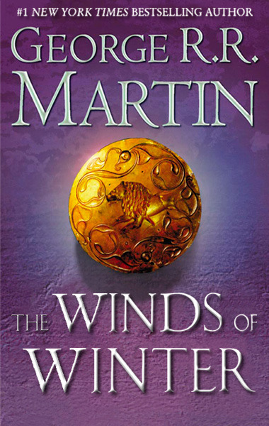
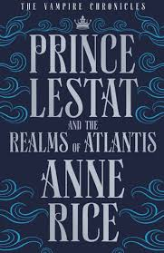
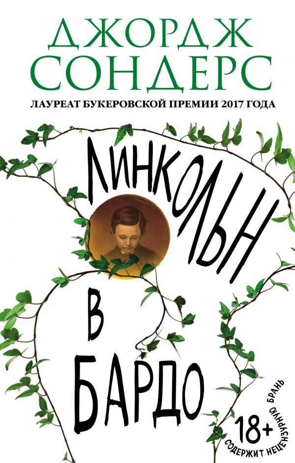

5 самых ожидаемых книг 2018 года

Уже стало традицией говорить о выходе шестой книге цикла «Песнь Льда и Пламени»: «Ветра зимы». Всеми любимый автор, начиная с 2016 года, обещает вот-вот закончить работу над последней книгой цикла. «Ветра зимы» должны были появиться в продаже перед выходом 7-го сезона сериала «Игра престолов», но Джордж Мартин не отдал рукопись редакторам. Продюсеры сериала даже отложили премьеру сериала на полгода, чтобы автор смог выпустить шестую книгу. Но, увы! В своем блоге писатель отметил, что его ждет ещё много месяцев работы, но он постарается закончить её, как можно быстрее. А всем поклонникам остается запастись терпением и надеяться, что книга «Ветра зимы» выйдет в 2018 году.
«Ветра зимы» - Автор Джордж Рэймонд Ричард Мартин.
Уже стало традицией говорить о выходе шестой книге цикла «Песнь Льда и Пламени»: «Ветра зимы». Всеми любимый автор, начиная с 2016 года, обещает вот-вот закончить работу над последней книгой цикла. «Ветра зимы» должны были появиться в продаже перед выходом 7-го сезона сериала «Игра престолов», но Джордж Мартин не отдал рукопись редакторам. Продюсеры сериала даже отложили премьеру сериала на полгода, чтобы автор смог выпустить шестую книгу. Но, увы! В своем блоге писатель отметил, что его ждет ещё много месяцев работы, но он постарается закончить её, как можно быстрее. А всем поклонникам остается запастись терпением и надеяться, что книга «Ветра зимы» выйдет в 2018 году.
«Спящие красавицы» - Роман Стивена и Оуэна Кинга.
26 сентября 2017 года в Америке вышла новая книга Стивена Кинга, написанная в соавторстве с сыном Оуэном. Книга получила название «Спящие красавицы». Новый роман написан в фирменном стиле Короля Ужасов. В этот раз действие разворачивается в женской тюрьме, где ночью происходят странные события. Стоит заключенным попасть в царство Морфея, как их окутывает кокон. И если потревожить сон спящей, то она изменится до неузнаваемости. Но среди царства спящих красавиц, есть Эви. Права на издание книги приобрело издательство АСТ. Выход книги «Спящие красавицы» Стивена и Оуэна Кинга запланирован на осень 2018 года.

Энн Райс прославилась благодаря серии книг «Вампирские хроники». Главный герой – вампир Лестат, который и ведет повествование о жизни вампиров. При этом часто в книгах всплывают ещё более фантастические события. Да и в целом сюжет очень лихо закручен, да так, что разобраться иногда невозможно. Но, тем не менее, эту серию любят не только читатели, но и режиссеры, которые уже экранизировали три тома. В 1994 году вышел фильм «Интервью с вампиром: Хроника жизни вампира», а в 2002 году появилась экранизация сразу двух книг, а фильм получил название «Королева проклятых». Всего в серии насчитывается 13 книг. И последняя вышла в 2016 году – «Prince Lestat and the Realms of Atlantis», в вольном переводе название звучит, как «Принц Лестат и Королевство Атлантиды». Книга доступна в оригинале, многие поклонники уже успели оценить этот роман. Ну, а в 2018 году книга должна появиться на русском языке.
Энн Райс – «Prince Lestat and the Realms of Atlantis».
Энн Райс прославилась благодаря серии книг «Вампирские хроники». Главный герой – вампир Лестат, который и ведет повествование о жизни вампиров. При этом часто в книгах всплывают ещё более фантастические события. Да и в целом сюжет очень лихо закручен, да так, что разобраться иногда невозможно. Но, тем не менее, эту серию любят не только читатели, но и режиссеры, которые уже экранизировали три тома. В 1994 году вышел фильм «Интервью с вампиром: Хроника жизни вампира», а в 2002 году появилась экранизация сразу двух книг, а фильм получил название «Королева проклятых». Всего в серии насчитывается 13 книг. И последняя вышла в 2016 году – «Prince Lestat and the Realms of Atlantis», в вольном переводе название звучит, как «Принц Лестат и Королевство Атлантиды». Книга доступна в оригинале, многие поклонники уже успели оценить этот роман. Ну, а в 2018 году книга должна появиться на русском языке.

Прозу главного американского прозаика последних лет никогда не издавали в России. Между тем Сондерс пишет самые популярные рассказы для The New Yorker и в прошлом году наконец выиграл Букеровскую премию за роман о президенте Аврааме Линкольне. История такая: в США идет Гражданская война, сын Линкольна – Вилли – умирает и попадает в чистилище. Дальше текст начинает походить на божественную комедию, сумасшедший дом и рейв одновременно.
«Линкольн в бардо» - Джордж Сондерс.
Прозу главного американского прозаика последних лет никогда не издавали в России. Между тем Сондерс пишет самые популярные рассказы для The New Yorker и в прошлом году наконец выиграл Букеровскую премию за роман о президенте Аврааме Линкольне. История такая: в США идет Гражданская война, сын Линкольна – Вилли – умирает и попадает в чистилище. Дальше текст начинает походить на божественную комедию, сумасшедший дом и рейв одновременно.

«Заклинание сатаны» - книга Умберто Эко.
Последний сборник эссе Умберто Эко на русском выйдет летом. За перевод с итальянского взялась Анна Ямпольская, работавшая с книгами Паоло Соррентино. В последней книге, которую Эко успел сдать редакторам незадолго до своей смерти 19 февраля 2016-го, он много пишет об интернете. Среди эссе – переписка с таинственной Мариной, которую Эко уличает в том, что она фейк (на фото в профиле была мисс Вселенная) и очень драматично грустит, а также его воспоминания о собственной смерти, о которой объявили в твиттере.